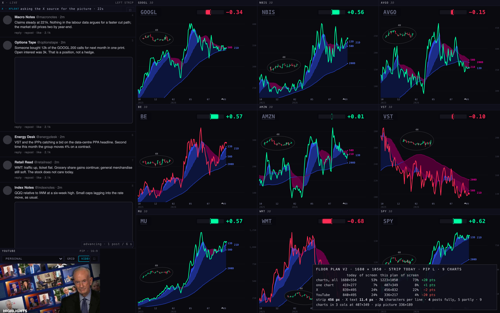
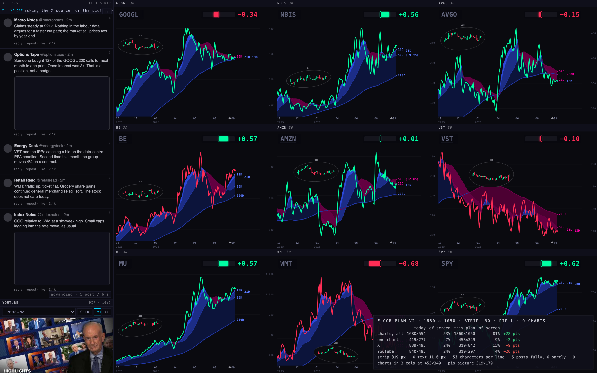
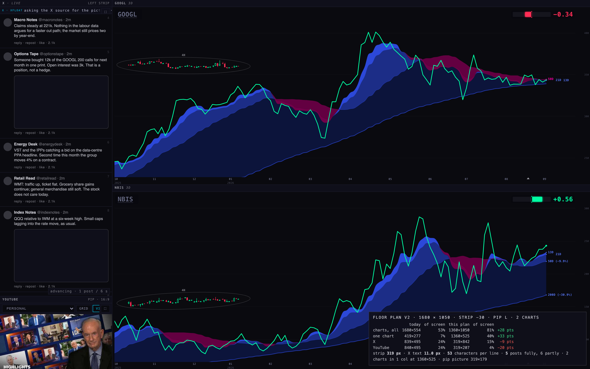
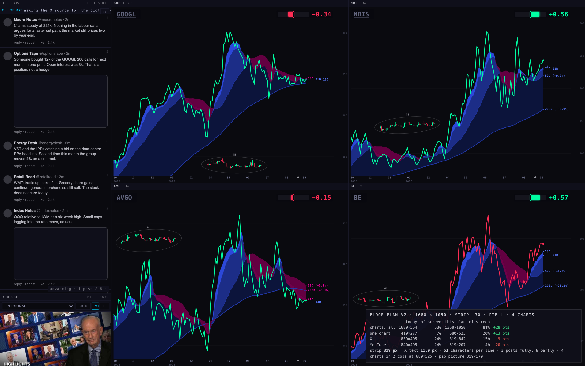
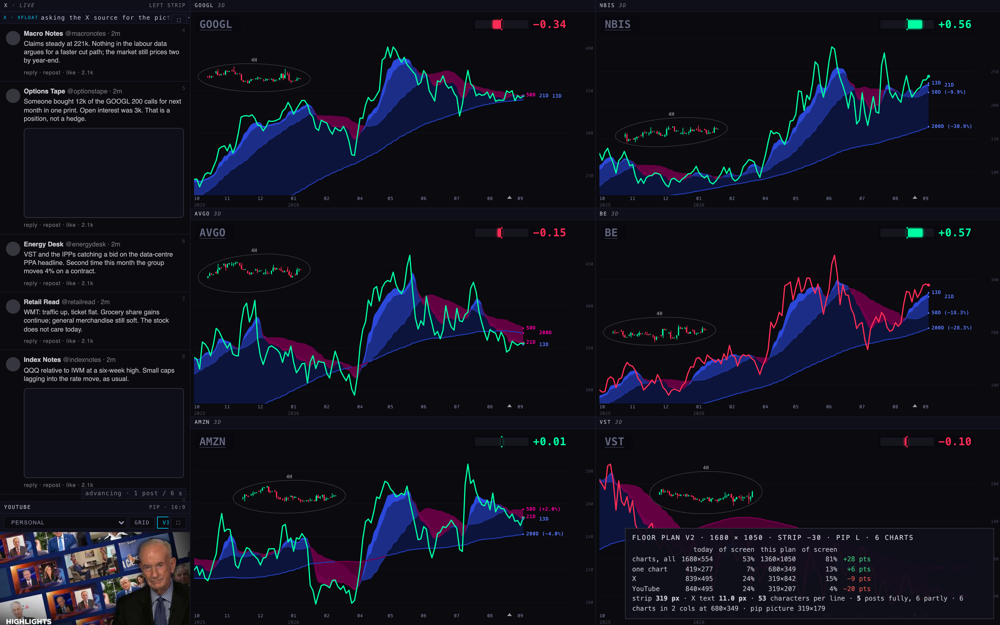

Station floor plan v2 · a slimmer X strip, YouTube as a picture-in-picture
Those are the chart area as a share of the whole screen at 1680 × 1050 (the MacBook). The same on each screen you use: the MacBook 53% → 81% · the Apple TV 53% → 81% · the external 53% → 83%. S8's plan already had the charts at 73% — the page did not say so, which is why it looked like less. The YouTube size does not change the chart area at all: the strip's width does. The PIP only trades against how many X posts you see above it.
Recommendation: 9 charts in three columns · the strip 30% slimmer than S8's · YouTube as the large PIP, which at that strip is simply as wide as the strip. the MacBook: strip 319 px, PIP 319 × 179, one chart 453 × 349, charts 81% · the Apple TV: strip 363 px, PIP 363 × 204, one chart 518 × 359, charts 81% · the external: strip 431 px, PIP 431 × 242, one chart 709 × 479, charts 83%.
1 · The chart area, in plain percent
"It doesn't tell me if I have more chart space or less … proportionally it looks like less. Charts from 53 to 73%."
Today was measured on the live deck (scene TARGETS, eight charts, the dock tucked away) at the three screens: the MacBook at 1680 × 1050, the Apple TV at 1920 × 1080 and the external at 2560 × 1440. Each proposal was measured on the mock at the same screens. "Chart area" is the whole block the charts fill, pane borders included; today's 53% is the upper half of the screen (the lower half is X and YouTube side by side).
the MacBook · 1680 × 1050
| floor plan | chart area, share of the screen | vs today | one chart, px |
|---|---|---|---|
| today (8 charts, X and YouTube in the lower half) | 53% | — | 419 × 277 |
| X strip today's strip (S8) (456 px), YouTube as a PIP, 9 charts | 73% | +20 pts | 407 × 349 |
| X strip 30% slimmer (319 px), YouTube as a PIP, 9 charts | 81% | +28 pts | 453 × 349 |
| X strip 50% slimmer (228 px), YouTube as a PIP, 9 charts | 86% | +33 pts | 483 × 349 |
the Apple TV · 1920 × 1080
| floor plan | chart area, share of the screen | vs today | one chart, px |
|---|---|---|---|
| today (8 charts, X and YouTube in the lower half) | 53% | — | 479 × 285 |
| X strip today's strip (S8) (518 px), YouTube as a PIP, 9 charts | 73% | +20 pts | 466 × 359 |
| X strip 30% slimmer (363 px), YouTube as a PIP, 9 charts | 81% | +28 pts | 518 × 359 |
| X strip 50% slimmer (259 px), YouTube as a PIP, 9 charts | 86% | +33 pts | 553 × 359 |
the external · 2560 × 1440
| floor plan | chart area, share of the screen | vs today | one chart, px |
|---|---|---|---|
| today (8 charts, X and YouTube in the lower half) | 53% | — | 639 × 380 |
| X strip today's strip (S8) (616 px), YouTube as a PIP, 9 charts | 76% | +23 pts | 647 × 479 |
| X strip 30% slimmer (431 px), YouTube as a PIP, 9 charts | 83% | +30 pts | 709 × 479 |
| X strip 50% slimmer (308 px), YouTube as a PIP, 9 charts | 88% | +35 pts | 750 × 479 |
S8 measured at 1680 × 1000 and 2240 × 1260 (the iMac); S9 uses the sizes in the S9 brief. The deck's chart row takes 52.8% at every size because its layout is proportional.
2 · The X strip at three widths
"The solution is simple: make the X thing more narrow."


Can you still read it?
X's own column is 600 px wide with 15 px text, about 80 characters per line. In the strip the text shrinks with the strip down to 11 px (the floor; below that it is not readable) and then the strip wraps more. A useful yardstick: X on a phone shows about 45 characters per line. The strip 30% slimmer gives 53 at 1680 — a little better than a phone. The strip 50% slimmer gives 35 — narrower than a phone; a normal post becomes five or six short lines. The posts on screen hardly change between the widths, because narrower posts are taller.
the MacBook · 1680 × 1050
| strip | width | X text | characters per line | posts on screen, large PIP | posts, small PIP | charts |
|---|---|---|---|---|---|---|
| today's strip (S8) | 456 px | 11.4 px | 76 | 4 fully · 5 partly | 4 fully · 5 partly | 73% |
| 30% slimmer | 319 px | 11.0 px | 53 | 4 fully · 5 partly | 5 fully · 6 partly | 81% |
| 50% slimmer | 228 px | 11.0 px | 35 | 5 fully · 6 partly | 5 fully · 6 partly | 86% |
the Apple TV · 1920 × 1080
| strip | width | X text | characters per line | posts on screen, large PIP | posts, small PIP | charts |
|---|---|---|---|---|---|---|
| today's strip (S8) | 518 px | 12.9 px | 77 | 4 fully · 5 partly | 4 fully · 5 partly | 73% |
| 30% slimmer | 363 px | 11.0 px | 62 | 4 fully · 5 partly | 5 fully · 6 partly | 81% |
| 50% slimmer | 259 px | 11.0 px | 41 | 5 fully · 6 partly | 5 fully · 6 partly | 86% |
the external · 2560 × 1440
| strip | width | X text | characters per line | posts on screen, large PIP | posts, small PIP | charts |
|---|---|---|---|---|---|---|
| today's strip (S8) | 616 px | 15.4 px | 77 | 4 fully · 5 partly | 4 fully · 5 partly | 76% |
| 30% slimmer | 431 px | 11.0 px | 74 | 7 fully · 8 partly | 7 fully · 8 partly | 83% |
| 50% slimmer | 308 px | 11.0 px | 51 | 7 fully · 8 partly | 7 fully · 8 partly | 88% |
Posts here are drawn with real text at the measured size (the live X capture needs your Chrome and does not run in a hidden browser). "Fully" = the whole post is on screen; "partly" counts the one cut off at the bottom too.
3 · YouTube as a picture-in-picture
"YouTube more narrow too, more like PIP size … YouTube could drop more — the charts are more important."
The PIP sits at the strip's foot, a 16:9 picture under the player's 28 px bar. Two sizes: large = 20% of the screen's width, small = 14%; neither is ever wider than the strip, so at the slim strips the large one is simply strip-wide. Today's YouTube pane is 24% of the screen; the large PIP at the slim strip is 4%, the small one 2%. What a smaller PIP buys is one more post above it, not more chart.
the MacBook · 1680 × 1050
| YouTube | picture, px (16:9) | share of the screen | posts left above it |
|---|---|---|---|
| today's YouTube pane | 840 × 467 | 24% | — |
| large PIP (20% of the screen's width) · strip today's strip (S8) | 336 × 189 | 4% | 4 fully · 5 partly |
| large PIP (20% of the screen's width) · strip 30% slimmer | 319 × 179 — capped at the strip's width | 4% | 4 fully · 5 partly |
| large PIP (20% of the screen's width) · strip 50% slimmer | 228 × 128 — capped at the strip's width | 2% | 5 fully · 6 partly |
| small PIP (14%) · strip today's strip (S8) | 235 × 132 | 2% | 4 fully · 5 partly |
| small PIP (14%) · strip 30% slimmer | 235 × 132 | 2% | 5 fully · 6 partly |
| small PIP (14%) · strip 50% slimmer | 228 × 128 — capped at the strip's width | 2% | 5 fully · 6 partly |
the Apple TV · 1920 × 1080
| YouTube | picture, px (16:9) | share of the screen | posts left above it |
|---|---|---|---|
| today's YouTube pane | 960 × 481 | 24% | — |
| large PIP (20% of the screen's width) · strip today's strip (S8) | 384 × 216 | 4% | 4 fully · 5 partly |
| large PIP (20% of the screen's width) · strip 30% slimmer | 363 × 204 — capped at the strip's width | 4% | 4 fully · 5 partly |
| large PIP (20% of the screen's width) · strip 50% slimmer | 259 × 146 — capped at the strip's width | 2% | 5 fully · 6 partly |
| small PIP (14%) · strip today's strip (S8) | 269 × 151 | 2% | 4 fully · 5 partly |
| small PIP (14%) · strip 30% slimmer | 269 × 151 | 2% | 5 fully · 6 partly |
| small PIP (14%) · strip 50% slimmer | 259 × 146 — capped at the strip's width | 2% | 5 fully · 6 partly |
the external · 2560 × 1440
| YouTube | picture, px (16:9) | share of the screen | posts left above it |
|---|---|---|---|
| today's YouTube pane | 1280 × 651 | 24% | — |
| large PIP (20% of the screen's width) · strip today's strip (S8) | 512 × 288 | 4% | 4 fully · 5 partly |
| large PIP (20% of the screen's width) · strip 30% slimmer | 431 × 242 — capped at the strip's width | 3% | 7 fully · 8 partly |
| large PIP (20% of the screen's width) · strip 50% slimmer | 308 × 173 — capped at the strip's width | 2% | 7 fully · 8 partly |
| small PIP (14%) · strip today's strip (S8) | 358 × 201 | 2% | 4 fully · 5 partly |
| small PIP (14%) · strip 30% slimmer | 358 × 201 | 2% | 7 fully · 8 partly |
| small PIP (14%) · strip 50% slimmer | 308 × 173 — capped at the strip's width | 2% | 7 fully · 8 partly |
4 · The chart grids: 2, 4, 6 and 9
"A nine-chart layout will look better with X more slim … six and three charts will be weird, four and two good."
Drawn to scale (the strip 30% slimmer, the large PIP)
the MacBook · 1680 × 1050
the Apple TV · 1920 × 1080
the external · 2560 × 1440
What looks right
| grid at 1680 × 1050 | chart area | one chart |
|---|---|---|
| 2 charts — two charts stacked, each as wide as the floor | 81% | 1360 × 525 px, 2.59 wide-to-tall |
| 4 charts — two by two | 81% | 680 × 525 px, 1.30 wide-to-tall |
| 6 charts — two columns of three | 81% | 680 × 349 px, 1.95 wide-to-tall |
| 9 charts — three by three | 81% | 453 × 349 px, 1.30 wide-to-tall |
| 6 charts — three columns of two (the weird one) | 81% | 453 × 525 px, 0.86 wide-to-tall |
| 2 charts — side by side | 81% | 680 × 1050 px, 0.65 wide-to-tall |
Today's chart is 419 × 277 px, 1.51 times wider than tall. A chart reads well between about 1.2 and 2 wide-to-tall. 9 (three by three) and 4 (two by two) land at 1.3 — the right shape, and the chart is bigger than today's in every case. 2 works stacked (each chart the full width of the floor, very wide) — side by side they are taller than wide, which is why two "looks weird" when drawn the obvious way. 6 in three columns is the problem you named: 453 × 525, taller than wide. The fix for 6: two columns of three — 680 × 349, a wide chart, the same height as the 9-grid's and half again as wide. The mock does this by default; 3 and 5 would follow the same rule (two columns, the last row half empty), or better, the deck simply offers 2 · 4 · 6 · 9.



On the other screens
5 · Decisions for you (three)
- How slim. 30% slimmer (319 px at 1680 — 53 characters per line, charts 81%) or 50% slimmer (228 px — 35 characters, charts 86%). Recommendation: 30% — it reads like X on a phone; at 50% every post is a tall sliver and the five extra points of chart are not worth it.
- The PIP size. Large (strip-wide at the slim strip: 319 × 179 at 1680) or small (235 × 132). Recommendation: large — it costs no chart area, it is already a sixth of today's picture, and the small one is hard to watch; the small one buys one more post.
- The 6-chart grid. Two columns of three (wide charts, recommended) or drop 6 from the choices and offer 2 · 4 · 9 only. Recommendation: two columns of three, and let the deck choose the columns by count (2 → 1, 4 and 6 → 2, 9 → 3).
What I did not do
- The live deck is untouched: this is a mock page beside S8's, not a Station page. Making it the deck is the next lane.
- The X strip's posts are drawn, not captured (the capture needs your Chrome). Their sizes follow X's real column and text size.
- Not deployed; not opened on your screen.
What could be wrong
- On the 2-chart grid a chart is 1360 px wide, and the oval lens (28% of the pane's width) becomes a long flat ellipse — see the 2-chart picture. If 2 is used often, the oval wants a cap on its long side.
- The X strip's posts are drawn with sample text at X's real sizes; a real feed has longer and shorter posts, so "posts on screen" is a typical figure, not an exact one.
- The percentages count the whole block each pane fills, borders and headers included, the same way for today and for every proposal.